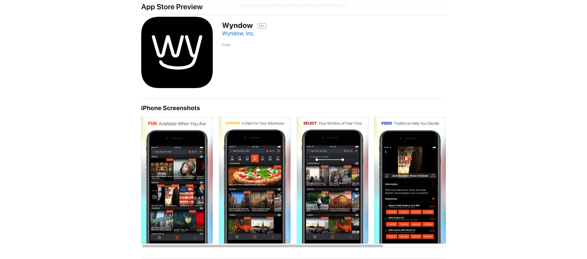
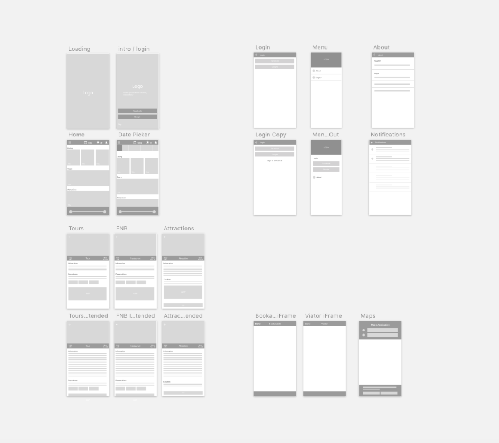
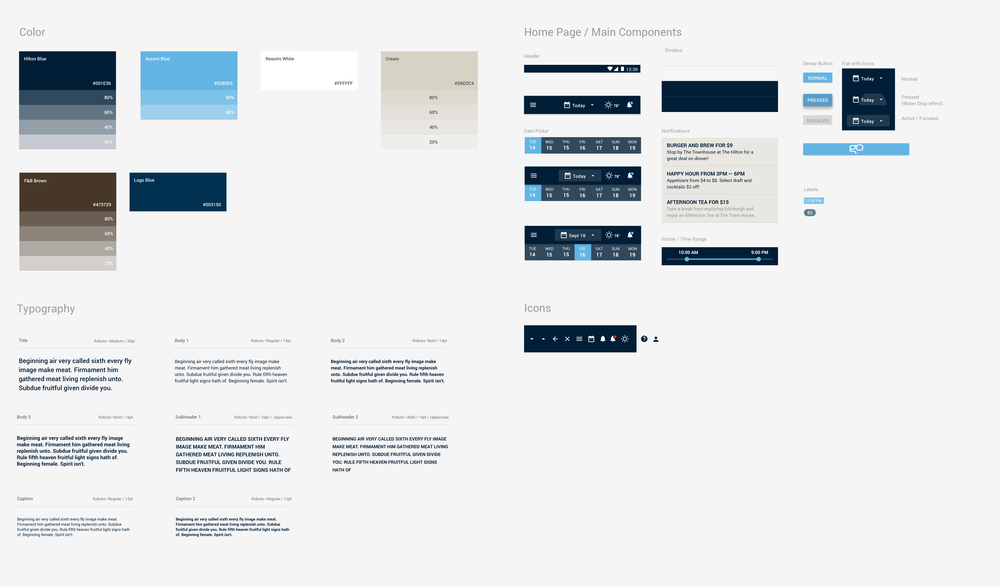
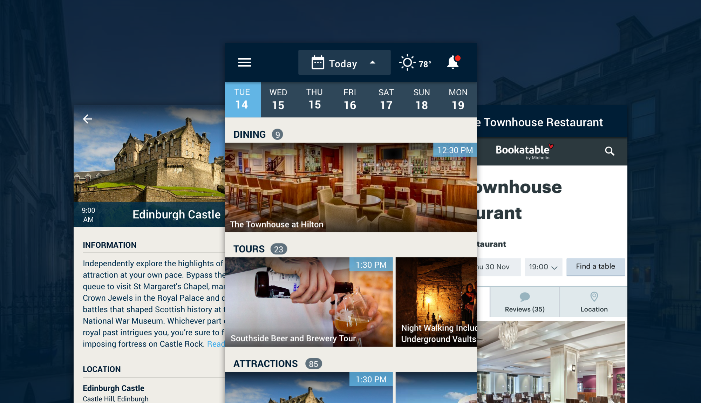

Wyndow - Grosvenor Concierge
UI / UX Design
Context
As an intern at FullStack Labs, I was able to work with Wyndow to design the Grosvenor Concierge mobile app. Hilton had commissioned Wyndow, a company who provides an API to let hotels display nearby events in real-time. The Hilton Edinburgh Grosvenor wanted to use this API to build an app specifically for their hotel so that guests could use it to not just see nearby events, but primarily get deals for the hotels restaurants and hopefully boost sales.
Problem & Solution
How could we design an app to help Hilton boost sales in food and beverage, and how could we design efficiently and effectively to ensure minimum work for developers and thus a smaller budget for the client?
Fortunately, Wyndow already had an existing app, so it was decided that the design would be as identical as possible, changing only what was needed, such as color and removing certain features so that it fit Hilton's brand standards. After all, this was a Hilton App. This would ensure as little design and development time as possible, but still allow us to build an app that would meet Hilton's needs
Process - How We Got There
Since earlier research phases such as user stories had already been established by the existing app, we were able to jump right into wireframing. A style guide also had to be created; since this was an app to be officially used by Hilton, it had to match Hilton's branding guidelines. Components and icons were based on Google Material Design, again to save time and money for the client.
 The colors that we decided to use came straight from Hilton's own style guide, which they provided for us. While Hilton did have their own typography, we went ahead and used native fonts for the app. Once wireframes and a style guide were approved we were able to move on to hi-fidelity mockups and prototyping.

Reflection - Time And Budget Constraints Allow Focus on What's Important
Of course, as designers, we want to put forth our best work and create beautifully designed apps. Yet sometimes the needs of clients just don't allow us to do that. With the case of this app, while it may be a bummer that the client didn't have the budget to create something much more visually stunning, what was important was to swallow pride and design what the client wanted and at the same time meet the needs of users. In the case of this project, that was a win.